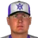

American Baseball League · Western Conference
Austin Violets
19-22 .463 · 9th in Western Conference, 7 GB
Run differential -39 (173 RS, 212 RA) · Pythagorean 17-24 · L10 4-6 · Streak W2 · Home 11-9 · Road 8-13
Astrodome (capacity 54,816)
REL Relegation pace (bottom of conference, matched to the promoted FBL clubs)
High Minors:  El Paso Chihuahuas · Low Minors: Waco Bears
El Paso Chihuahuas · Low Minors: Waco Bears
Depth chart & lineupsPayrollTransactionsLeague financesStaffBallparkRecord bookThis week's previewThe season so far
Season So Far games over .500 by date
Recent Results
Farm System automatic farm score
19th of 20 in the ABL with a farm score of 2.8 (49 players 25 or younger with stats at the affiliates). All farm systems →
Roster (26)
| # | Player | Pos | B/T | Age |
|---|---|---|---|---|
| 46 | Jason Bere | SP | R/R | 30 |
| 51 | Jason Beverlin | SP | L/R | 28 |
| 54 | Jason Middlebrook | SP | R/R | 26 |
| 39 | Shane Reynolds | SP | R/R | 34 |
| 36 | Jeff Weaver | SP | R/R | 25 |
| 20 | Doug Bochtler | RP | R/R | 31 |
| 21 | Miguel Duarte | RP | R/R | 24 |
| 63 | C.J. Nitkowski | RP | L/L | 29 |
| 3 | Steve Schrenk | RP | R/R | 33 |
| 10 | John Snyder | RP | R/R | 27 |
| 55 | Nate Teut | RP | R/L | 26 |
| 13 | Billy Wagner | CL | L/L | 30 |
| 19 | C | S/R | 24 | |
| 31 | C | R/R | 33 | |
| 24 | 1B | L/L | 37 | |
| 14 | Luis Alicea | 2B | S/R | 36 |
| 18 | Delino DeShields | 2B | L/R | 33 |
| 15 | Brandon Inge | 3B | R/R | 24 |
| 17 |  Dean Palmer | 3B | R/R | 33 |
| 16 | Alex Diaz | SS | S/R | 33 |
| 52 | SS | S/R | 30 | |
| 23 | LF | S/R | 28 | |
| 81 | LF | R/R | 32 | |
| 44 | Jay Payton | CF | R/R | 29 |
| 5 | Mark Johnson | RF | L/L | 34 |
| 37 | RF | L/R | 19 |
2002 Batting
| Player | G | PA | AB | R | H | 2B | 3B | HR | RBI | BB | K | SB | AVG | OBP | SLG | OPS |
|---|---|---|---|---|---|---|---|---|---|---|---|---|---|---|---|---|
| Jay Payton | 38 | 176 | 158 | 24 | 44 | 7 | 1 | 3 | 14 | 16 | 24 | 2 | .278 | .352 | .392 | .745 |
| Jose Cruz Jr. | 39 | 175 | 153 | 20 | 42 | 9 | 0 | 7 | 24 | 21 | 33 | 2 | .275 | .366 | .471 | .836 |
| Mark Grace | 39 | 172 | 151 | 18 | 56 | 14 | 0 | 4 | 25 | 19 | 8 | 0 | .371 | .442 | .543 | .985 |
| Delino DeShields | 34 | 154 | 133 | 18 | 32 | 7 | 0 | 1 | 7 | 18 | 20 | 12 | .241 | .340 | .316 | .656 |
| Mike Piazza | 33 | 146 | 131 | 20 | 39 | 5 | 0 | 6 | 20 | 12 | 21 | 0 | .298 | .356 | .473 | .829 |
| Luis Alicea | 34 | 141 | 123 | 8 | 42 | 8 | 0 | 0 | 12 | 16 | 17 | 0 | .341 | .421 | .407 | .828 |
| Mark Johnson | 35 | 135 | 119 | 15 | 30 | 9 | 0 | 1 | 15 | 10 | 26 | 1 | .252 | .306 | .353 | .659 |
| Brandon Inge | 32 | 127 | 115 | 9 | 27 | 4 | 1 | 2 | 11 | 9 | 32 | 0 | .235 | .299 | .339 | .638 |
| Jason Kubel | 30 | 111 | 103 | 10 | 29 | 9 | 0 | 1 | 11 | 7 | 18 | 0 | .282 | .324 | .398 | .722 |
| Dean Palmer | 29 | 105 | 88 | 12 | 20 | 4 | 1 | 3 | 16 | 14 | 19 | 0 | .227 | .324 | .398 | .722 |
| Alex Diaz | 26 | 95 | 87 | 13 | 23 | 5 | 0 | 3 | 8 | 6 | 22 | 3 | .264 | .319 | .425 | .744 |
| Rudy Pemberton | 7 | 19 | 16 | 2 | 3 | 0 | 0 | 1 | 3 | 1 | 5 | 0 | .188 | .278 | .375 | .653 |
| Josh Bard | 7 | 17 | 16 | 1 | 4 | 1 | 0 | 1 | 3 | 1 | 4 | 0 | .250 | .294 | .500 | .794 |
| Jose Tovar | 5 | 16 | 15 | 1 | 1 | 0 | 0 | 0 | 1 | 0 | 4 | 0 | .067 | .062 | .067 | .129 |
| Luis Rodriguez | 4 | 12 | 9 | 1 | 1 | 0 | 0 | 0 | 0 | 2 | 2 | 0 | .111 | .273 | .111 | .384 |
| Pat Deschenes | 1 | 4 | 4 | 0 | 1 | 1 | 0 | 0 | 1 | 0 | 1 | 0 | .250 | .250 | .500 | .750 |
| Hector Luna | 2 | 1 | 1 | 1 | 0 | 0 | 0 | 0 | 0 | 0 | 1 | 0 | .000 | .000 | .000 | .000 |
| Team | 41 | 1606 | 1422 | 173 | 394 | 83 | 3 | 33 | 171 | 152 | 257 | 20 | .277 | .349 | .409 | .759 |
2002 Batting, Advanced
| Player | PA | AVG | OBP | SLG | OPS+ | ISO | BABIP | BB% | K% | WPA | UBR | WAR |
|---|---|---|---|---|---|---|---|---|---|---|---|---|
| Jay Payton | 176 | .278 | .352 | .392 | 85 | .114 | .313 | 9.1% | 13.6% | -0.17 | 0.4 | 1.0 |
| Jose Cruz Jr. | 175 | .275 | .366 | .471 | 106 | .196 | .310 | 12.0% | 18.9% | 0.20 | -0.5 | 0.8 |
| Mark Grace | 172 | .371 | .442 | .543 | 143 | .172 | .371 | 11.0% | 4.7% | 1.43 | 0.2 | 1.6 |
| Delino DeShields | 154 | .241 | .340 | .316 | 64 | .075 | .277 | 11.7% | 13.0% | 0.57 | -0.4 | -0.6 |
| Mike Piazza | 146 | .298 | .356 | .473 | 104 | .176 | .311 | 8.2% | 14.4% | -0.17 | -1.1 | 0.8 |
| Luis Alicea | 141 | .341 | .421 | .407 | 107 | .065 | .396 | 11.3% | 12.1% | 0.57 | -1.4 | 0.2 |
| Mark Johnson | 135 | .252 | .306 | .353 | 63 | .101 | .302 | 7.4% | 19.3% | 0.04 | -0.3 | 0.0 |
| Brandon Inge | 127 | .235 | .299 | .339 | 58 | .104 | .305 | 7.1% | 25.2% | -0.91 | -0.8 | -0.3 |
| Jason Kubel | 111 | .282 | .324 | .398 | 78 | .117 | .329 | 6.3% | 16.2% | -0.65 | -0.3 | -0.1 |
| Dean Palmer | 105 | .227 | .324 | .398 | 78 | .170 | .246 | 13.3% | 18.1% | 0.19 | -1.3 | -0.2 |
| Alex Diaz | 95 | .264 | .319 | .425 | 83 | .161 | .323 | 6.3% | 23.2% | 0.19 | -0.2 | 0.3 |
| Rudy Pemberton | 19 | .188 | .278 | .375 | 60 | .188 | .200 | 5.3% | 26.3% | 0.02 | 0.0 | -0.2 |
| Josh Bard | 17 | .250 | .294 | .500 | 92 | .250 | .273 | 5.9% | 23.5% | -0.32 | 0.0 | 0.0 |
| Jose Tovar | 16 | .067 | .062 | .067 | -68 | .000 | .083 | 0.0% | 25.0% | -0.15 | 0.0 | -0.3 |
| Luis Rodriguez | 12 | .111 | .273 | .111 | 0 | .000 | .143 | 16.7% | 16.7% | -0.13 | -0.6 | -0.2 |
| Pat Deschenes | 4 | .250 | .250 | .500 | 80 | .250 | .333 | 0.0% | 25.0% | -0.02 | 0.0 | 0.0 |
| Hector Luna | 1 | .000 | .000 | .000 | -100 | .000 | - | 0.0% | 100.0% | -0.16 | 0.0 | 0.0 |
| Team | 1606 | .277 | .349 | .409 | 88 | .132 | .315 | 9.5% | 16.0% | 0.53 | -6.3 | 2.8 |
2002 Pitching
| Pitcher | G | GS | W | L | SV | IP | H | R | ER | BB | K | HR | ERA | WHIP |
|---|---|---|---|---|---|---|---|---|---|---|---|---|---|---|
| Jason Bere | 9 | 9 | 4 | 3 | 0 | 57.0 | 61 | 27 | 21 | 17 | 49 | 6 | 3.32 | 1.37 |
| Jeff Weaver | 9 | 9 | 3 | 3 | 0 | 53.1 | 70 | 33 | 32 | 16 | 33 | 5 | 5.40 | 1.61 |
| Shane Reynolds | 8 | 8 | 4 | 2 | 0 | 51.0 | 53 | 21 | 15 | 8 | 26 | 2 | 2.65 | 1.20 |
| Jason Beverlin | 8 | 8 | 2 | 4 | 0 | 48.0 | 50 | 26 | 25 | 19 | 40 | 6 | 4.69 | 1.44 |
| Jason Middlebrook | 7 | 7 | 0 | 3 | 0 | 33.0 | 49 | 29 | 24 | 9 | 28 | 6 | 6.55 | 1.76 |
| John Snyder | 13 | 0 | 3 | 3 | 1 | 25.0 | 30 | 14 | 12 | 9 | 15 | 1 | 4.32 | 1.56 |
| Steve Schrenk | 12 | 0 | 0 | 1 | 0 | 24.2 | 29 | 14 | 13 | 5 | 19 | 4 | 4.74 | 1.38 |
| Nate Teut | 14 | 0 | 0 | 1 | 1 | 18.2 | 27 | 23 | 23 | 13 | 12 | 4 | 11.09 | 2.14 |
| Billy Wagner | 14 | 0 | 2 | 1 | 8 | 18.0 | 15 | 3 | 3 | 4 | 23 | 1 | 1.50 | 1.06 |
| Doug Bochtler | 10 | 0 | 0 | 1 | 0 | 16.1 | 18 | 14 | 14 | 15 | 13 | 0 | 7.71 | 2.02 |
| Miguel Duarte | 8 | 0 | 1 | 0 | 0 | 14.0 | 16 | 2 | 2 | 10 | 7 | 0 | 1.29 | 1.86 |
| C.J. Nitkowski | 8 | 0 | 0 | 0 | 0 | 3.1 | 6 | 6 | 6 | 3 | 3 | 4 | 16.20 | 2.70 |
| Team | 41 | 41 | 19 | 22 | 10 | 362.1 | 424 | 212 | 190 | 128 | 268 | 39 | 4.72 | 1.52 |
2002 Pitching, Advanced
| Pitcher | IP | ERA | WHIP | K/9 | BB/9 | HR/9 | K% | BB% | K-BB% | FIP | ERA+ | GB% | WPA | WAR |
|---|---|---|---|---|---|---|---|---|---|---|---|---|---|---|
| Jason Bere | 57.0 | 3.32 | 1.37 | 7.7 | 2.7 | 0.9 | 19.6% | 6.8% | 12.8% | 4.28 | 155 | 41.7% | -0.03 | 1.2 |
| Jeff Weaver | 53.1 | 5.40 | 1.61 | 5.6 | 2.7 | 0.8 | 13.8% | 6.7% | 7.1% | 4.74 | 95 | 41.9% | -0.76 | 0.9 |
| Shane Reynolds | 51.0 | 2.65 | 1.20 | 4.6 | 1.4 | 0.4 | 12.4% | 3.8% | 8.6% | 3.76 | 194 | 56.4% | 0.64 | 1.4 |
| Jason Beverlin | 48.0 | 4.69 | 1.44 | 7.5 | 3.6 | 1.1 | 19.0% | 9.0% | 10.0% | 4.96 | 110 | 48.5% | -0.73 | 0.6 |
| Jason Middlebrook | 33.0 | 6.55 | 1.76 | 7.6 | 2.5 | 1.6 | 17.5% | 5.6% | 11.9% | 5.17 | 78 | 47.1% | -1.54 | 0.4 |
| John Snyder | 25.0 | 4.32 | 1.56 | 5.4 | 3.2 | 0.4 | 13.0% | 7.8% | 5.2% | 4.33 | 119 | 53.4% | -0.73 | 0.3 |
| Steve Schrenk | 24.2 | 4.74 | 1.38 | 6.9 | 1.8 | 1.5 | 18.1% | 4.8% | 13.3% | 4.98 | 108 | 44.0% | 0.28 | 0.1 |
| Nate Teut | 18.2 | 11.09 | 2.14 | 5.8 | 6.3 | 1.9 | 12.9% | 14.0% | -1.1% | 7.28 | 46 | 47.5% | -0.49 | -0.4 |
| Billy Wagner | 18.0 | 1.50 | 1.06 | 11.5 | 2.0 | 0.5 | 31.9% | 5.6% | 26.4% | 2.69 | 342 | 32.1% | 1.19 | 0.8 |
| Doug Bochtler | 16.1 | 7.71 | 2.02 | 7.2 | 8.3 | 0.0 | 15.9% | 18.3% | -2.4% | 4.85 | 67 | 44.4% | 0.04 | 0.1 |
| Miguel Duarte | 14.0 | 1.29 | 1.86 | 4.5 | 6.4 | 0.0 | 11.1% | 15.9% | -4.8% | 4.83 | 399 | 50.0% | 0.19 | 0.1 |
| C.J. Nitkowski | 3.1 | 16.20 | 2.70 | 8.1 | 8.1 | 10.8 | 15.8% | 15.8% | 0.0% | 20.19 | 32 | 42.9% | -0.17 | -0.5 |
| Team | 362.1 | 4.72 | 1.52 | 6.7 | 3.2 | 1.0 | 16.5% | 7.9% | 8.6% | 4.77 | 109 | 46.8% | -2.13 | 4.9 |
2002 Fielding
| Player | Pos | G | GS | Inn | TC | PO | A | E | DP | FPct | ZR | Arm | Framing |
|---|---|---|---|---|---|---|---|---|---|---|---|---|---|
| Brian Mallette | P | 50 | 0 | 400.0 | 7 | 2 | 5 | 0 | 1 | 1.000 | 0.0 | - | - |
| Ryan Poe | P | 49 | 5 | 392.0 | 7 | 2 | 5 | 0 | 1 | 1.000 | 0.0 | - | - |
| Mike Shwam | P | 47 | 0 | 376.0 | 7 | 2 | 5 | 0 | 1 | 1.000 | 0.0 | - | - |
| Victor Cordero | P | 46 | 0 | 368.0 | 7 | 2 | 5 | 0 | 1 | 1.000 | 0.0 | - | - |
| Gene Altman | P | 42 | 0 | 336.0 | 6 | 2 | 4 | 0 | 1 | 1.000 | 0.0 | - | - |
| Greg Schaub | P | 40 | 0 | 320.0 | 6 | 1 | 5 | 0 | 1 | 1.000 | 0.0 | - | - |
| Matt Parker | P | 40 | 12 | 320.0 | 15 | 4 | 10 | 1 | 1 | .933 | 0.0 | - | - |
| Dan Hall | P | 38 | 0 | 304.0 | 6 | 2 | 4 | 0 | 1 | 1.000 | 0.0 | - | - |
| Chris McGee | P | 37 | 2 | 296.0 | 6 | 2 | 4 | 0 | 1 | 1.000 | 0.0 | - | - |
| Jason Childers | P | 34 | 14 | 272.0 | 14 | 4 | 10 | 0 | 1 | 1.000 | 0.0 | - | - |
| Valerio de los Santos | P | 33 | 23 | 264.0 | 14 | 2 | 11 | 1 | 1 | .929 | 0.0 | - | - |
| Luis Martinez | P | 28 | 13 | 224.0 | 16 | 1 | 13 | 2 | 1 | .875 | 0.0 | - | - |
| Roberto Maysonet | P | 28 | 17 | 224.0 | 4 | 1 | 3 | 0 | 1 | 1.000 | 0.0 | - | - |
| Tony Pavlovich | P | 28 | 0 | 224.0 | 4 | 1 | 3 | 0 | 1 | 1.000 | 0.0 | - | - |
| Mike Penney | P | 27 | 27 | 216.0 | 14 | 5 | 8 | 1 | 1 | .929 | 0.0 | - | - |
| Jose Garcia | P | 27 | 26 | 216.0 | 30 | 8 | 21 | 1 | 1 | .967 | 0.0 | - | - |
| Justin Gordon | P | 27 | 24 | 216.0 | 4 | 1 | 3 | 0 | 1 | 1.000 | 0.0 | - | - |
| Paul Stewart | P | 26 | 25 | 208.0 | 18 | 6 | 11 | 1 | 1 | .944 | 0.0 | - | - |
| Greg Schaub | P | 25 | 0 | 200.0 | 4 | 1 | 3 | 0 | 1 | 1.000 | 0.0 | - | - |
| Ben Hendrickson | P | 25 | 25 | 200.0 | 28 | 9 | 18 | 1 | 1 | .964 | 0.0 | - | - |
| Allen Levrault | P | 24 | 24 | 192.0 | 16 | 5 | 10 | 1 | 1 | .938 | 0.0 | - | - |
| Brian Tollberg | P | 22 | 22 | 176.0 | 17 | 6 | 10 | 1 | 1 | .941 | 0.0 | - | - |
| Ryan Miller | P | 22 | 22 | 176.0 | 12 | 3 | 8 | 1 | 1 | .917 | 0.0 | - | - |
| Jeff D'Amico | P | 21 | 20 | 168.0 | 3 | 1 | 2 | 0 | 1 | 1.000 | 0.0 | - | - |
| Steve Woodard | P | 21 | 21 | 168.0 | 24 | 8 | 15 | 1 | 1 | .958 | 0.0 | - | - |
| J.M. Gold | P | 21 | 21 | 168.0 | 3 | 1 | 2 | 0 | 1 | 1.000 | 0.0 | - | - |
| Matt Childers | P | 20 | 19 | 160.0 | 11 | 4 | 7 | 0 | 1 | 1.000 | 0.0 | - | - |
| Jack Krawczyk | P | 19 | 3 | 152.0 | 6 | 2 | 4 | 0 | 1 | 1.000 | 0.0 | - | - |
| Nick Neugebauer | P | 18 | 18 | 144.0 | 3 | 1 | 2 | 0 | 0 | 1.000 | 0.0 | - | - |
| Horacio Estrada | P | 17 | 0 | 136.0 | 18 | 5 | 12 | 1 | 0 | .944 | 0.0 | - | - |
| Dave Pember | P | 17 | 16 | 136.0 | 3 | 1 | 2 | 0 | 0 | 1.000 | 0.0 | - | - |
| Jeff Robinson | P | 17 | 16 | 136.0 | 3 | 1 | 2 | 0 | 0 | 1.000 | 0.0 | - | - |
| Rickey Lewis | P | 16 | 14 | 128.0 | 15 | 5 | 8 | 2 | 0 | .867 | 0.0 | - | - |
| Greg Mullins | P | 15 | 4 | 120.0 | 3 | 1 | 2 | 0 | 0 | 1.000 | 0.0 | - | - |
| Victor Cordero | P | 15 | 0 | 120.0 | 3 | 1 | 2 | 0 | 0 | 1.000 | 0.0 | - | - |
| Al Hawkins | P | 15 | 14 | 120.0 | 18 | 4 | 13 | 1 | 0 | .944 | 0.0 | - | - |
| Matt Childers | P | 14 | 12 | 112.0 | 8 | 3 | 5 | 0 | 0 | 1.000 | 0.0 | - | - |
| Kelly Wunsch | P | 14 | 14 | 112.0 | 8 | 2 | 5 | 1 | 0 | .875 | 0.0 | - | - |
| Doug Johnston | P | 14 | 14 | 112.0 | 13 | 5 | 7 | 1 | 0 | .923 | 0.0 | - | - |
| Al Reyes | P | 13 | 0 | 104.0 | 2 | 1 | 1 | 0 | 0 | 1.000 | 0.0 | - | - |
| Matt Childers | P | 12 | 12 | 96.0 | 6 | 2 | 4 | 0 | 0 | 1.000 | 0.0 | - | - |
| Pete Smart | P | 11 | 11 | 88.0 | 3 | 1 | 2 | 0 | 0 | 1.000 | 0.0 | - | - |
| Jared Camp | P | 11 | 11 | 88.0 | 6 | 2 | 4 | 0 | 0 | 1.000 | 0.0 | - | - |
| Ruddy Lugo | P | 10 | 0 | 80.0 | 5 | 2 | 3 | 0 | 0 | 1.000 | 0.0 | - | - |
| Heath McMurray | P | 9 | 0 | 72.0 | 5 | 1 | 4 | 0 | 0 | 1.000 | 0.0 | - | - |
| Jeff Alfano | P | 9 | 0 | 72.0 | 5 | 1 | 4 | 0 | 0 | 1.000 | 0.0 | - | - |
| Dave Pember | P | 8 | 8 | 64.0 | 4 | 1 | 3 | 0 | 0 | 1.000 | 0.0 | - | - |
| Mark Watson | P | 8 | 7 | 64.0 | 3 | 1 | 2 | 0 | 0 | 1.000 | 0.0 | - | - |
| Jason Bere | P | 9 | 9 | 57.0 | 6 | 4 | 2 | 0 | 0 | 1.000 | -0.8 | - | - |
| Rusty Gray | P | 7 | 0 | 56.0 | 1 | 0 | 1 | 0 | 0 | 1.000 | 0.0 | - | - |
| Chris Pine | P | 7 | 0 | 56.0 | 1 | 0 | 1 | 0 | 0 | 1.000 | 0.0 | - | - |
| J.M. Gold | P | 7 | 7 | 56.0 | 1 | 0 | 1 | 0 | 0 | 1.000 | 0.0 | - | - |
| Jeff Weaver | P | 9 | 9 | 53.1 | 8 | 3 | 5 | 0 | 0 | 1.000 | 0.8 | - | - |
| Shane Reynolds | P | 8 | 8 | 51.0 | 4 | 2 | 1 | 1 | 0 | .750 | -1.0 | - | - |
| Jason Beverlin | P | 8 | 8 | 48.0 | 3 | 2 | 1 | 0 | 0 | 1.000 | -0.5 | - | - |
| Jack Krawczyk | P | 6 | 0 | 48.0 | 2 | 1 | 1 | 0 | 0 | 1.000 | 0.0 | - | - |
| Al Hawkins | P | 6 | 6 | 48.0 | 7 | 2 | 5 | 0 | 0 | 1.000 | 0.0 | - | - |
| Tano Tijerina | P | 5 | 0 | 40.0 | 1 | 0 | 1 | 0 | 0 | 1.000 | 0.0 | - | - |
| Jason Middlebrook | P | 7 | 7 | 33.0 | 2 | 0 | 2 | 0 | 0 | 1.000 | -0.7 | - | - |
| John Snyder | P | 13 | 0 | 25.0 | 1 | 0 | 1 | 0 | 0 | 1.000 | 0.1 | - | - |
| Kyle Peterson | P | 3 | 3 | 24.0 | 3 | 1 | 2 | 0 | 0 | 1.000 | 0.0 | - | - |
| Steve Schrenk | P | 12 | 0 | 24.2 | 1 | 1 | 0 | 0 | 0 | 1.000 | 0.1 | - | - |
| Jeff Bronkey | P | 3 | 3 | 24.0 | 1 | 0 | 1 | 0 | 0 | 1.000 | 0.0 | - | - |
| Jared Mathis | P | 3 | 0 | 24.0 | 1 | 0 | 1 | 0 | 0 | 1.000 | 0.0 | - | - |
| Nate Teut | P | 14 | 0 | 18.2 | 1 | 0 | 1 | 0 | 0 | 1.000 | 0.1 | - | - |
| Billy Wagner | P | 14 | 0 | 18.0 | 2 | 0 | 1 | 1 | 1 | .500 | -0.2 | - | - |
| Doug Bochtler | P | 10 | 0 | 16.1 | 1 | 1 | 0 | 0 | 0 | 1.000 | -0.5 | - | - |
| Jeff D'Amico | P | 2 | 2 | 16.0 | 1 | 0 | 1 | 0 | 0 | 1.000 | 0.0 | - | - |
| Jeff D'Amico | P | 2 | 2 | 16.0 | 1 | 0 | 1 | 0 | 0 | 1.000 | 0.0 | - | - |
| Chad Fox | P | 2 | 1 | 16.0 | 2 | 1 | 1 | 0 | 0 | 1.000 | 0.0 | - | - |
| Anthony Iapoce | P | 2 | 0 | 16.0 | 1 | 0 | 1 | 0 | 0 | 1.000 | 0.0 | - | - |
| Miguel Duarte | P | 8 | 0 | 14.0 | 0 | 0 | 0 | 0 | 0 | - | 0.5 | - | - |
| Williams Jaha | P | 1 | 0 | 8.0 | 0 | 0 | 0 | 0 | 0 | - | 0.0 | - | - |
| Williams Jaha | P | 1 | 0 | 8.0 | 0 | 0 | 0 | 0 | 0 | - | 0.0 | - | - |
| Kessick Leiter | P | 1 | 0 | 8.0 | 1 | 0 | 1 | 0 | 0 | 1.000 | 0.0 | - | - |
| Robinson Cancel | P | 1 | 0 | 8.0 | 0 | 0 | 0 | 0 | 0 | - | 0.0 | - | - |
| Robinson Cancel | P | 1 | 0 | 8.0 | 0 | 0 | 0 | 0 | 0 | - | 0.0 | - | - |
| Jeff D'Amico | P | 1 | 1 | 8.0 | 0 | 0 | 0 | 0 | 0 | - | 0.0 | - | - |
| Paul Wagner | P | 1 | 1 | 8.0 | 1 | 0 | 1 | 0 | 0 | 1.000 | 0.0 | - | - |
| Mike Ignasiak | P | 1 | 1 | 8.0 | 1 | 0 | 1 | 0 | 0 | 1.000 | 0.0 | - | - |
| Scott Candelaria | P | 1 | 0 | 8.0 | 0 | 0 | 0 | 0 | 0 | - | 0.0 | - | - |
| Sergio Guerrero | P | 1 | 0 | 8.0 | 0 | 0 | 0 | 0 | 0 | - | 0.0 | - | - |
| Scott Krause | P | 1 | 0 | 8.0 | 0 | 0 | 0 | 0 | 0 | - | 0.0 | - | - |
| Mike Dumas | P | 1 | 0 | 8.0 | 0 | 0 | 0 | 0 | 0 | - | 0.0 | - | - |
| Jose Montenegro | P | 1 | 0 | 8.0 | 0 | 0 | 0 | 0 | 0 | - | 0.0 | - | - |
| Mickey Lopez | P | 1 | 0 | 8.0 | 0 | 0 | 0 | 0 | 0 | - | 0.0 | - | - |
| Jeff Deardorff | P | 1 | 0 | 8.0 | 0 | 0 | 0 | 0 | 0 | - | 0.0 | - | - |
| Nick Frank | P | 1 | 0 | 8.0 | 0 | 0 | 0 | 0 | 0 | - | 0.0 | - | - |
| Roberto Maysonet | P | 1 | 1 | 8.0 | 0 | 0 | 0 | 0 | 0 | - | 0.0 | - | - |
| C.J. Nitkowski | P | 5 | 0 | 3.1 | 0 | 0 | 0 | 0 | 0 | - | -0.2 | - | - |
| Brian Moon | C | 118 | 84 | 944.0 | 749 | 645 | 96 | 8 | 6 | .989 | -0.2 | 0.0 | 0.0 |
| Eliezer J. Alfonzo | C | 109 | 66 | 872.0 | 554 | 496 | 49 | 9 | 6 | .984 | 0.1 | 0.0 | 0.0 |
| Eliezer J. Alfonzo | C | 106 | 61 | 848.0 | 537 | 482 | 47 | 8 | 6 | .985 | -0.2 | 0.0 | 0.0 |
| Obispo Brito | C | 101 | 41 | 808.0 | 347 | 287 | 50 | 10 | 7 | .971 | -0.2 | 0.0 | 0.0 |
| Robinson Cancel | C | 72 | 59 | 576.0 | 481 | 421 | 54 | 6 | 4 | .988 | 0.1 | 0.0 | 0.0 |
| Alex Andreopoulos | C | 60 | 40 | 480.0 | 333 | 297 | 33 | 3 | 4 | .991 | -0.3 | 0.0 | 0.0 |
| Lance Burkhart | C | 58 | 40 | 464.0 | 333 | 303 | 27 | 3 | 3 | .991 | 0.1 | 0.0 | 0.0 |
| Mike Kinkade | C | 45 | 42 | 360.0 | 365 | 324 | 37 | 4 | 5 | .989 | -1.6 | 0.0 | 0.0 |
| Jason Belcher | C | 38 | 11 | 304.0 | 97 | 87 | 8 | 2 | 2 | .979 | 0.1 | 0.0 | 0.0 |
| Jeff Alfano | C | 37 | 31 | 296.0 | 265 | 233 | 27 | 5 | 3 | .981 | 0.1 | 0.0 | 0.0 |
| Brian Foster | C | 36 | 24 | 288.0 | 207 | 182 | 19 | 6 | 2 | .971 | 0.0 | 0.0 | 0.0 |
| Mike Piazza | C | 32 | 32 | 284.1 | 245 | 215 | 29 | 1 | 2 | .996 | 0.2 | 0.0 | 1.9 |
| Bobby Darula | C | 32 | 30 | 256.0 | 256 | 236 | 18 | 2 | 1 | .992 | -0.8 | 0.0 | 0.0 |
| Bobby Darula | C | 32 | 30 | 256.0 | 256 | 236 | 18 | 2 | 1 | .992 | -0.8 | 0.0 | 0.0 |
| Matt Ceriani | C | 22 | 19 | 176.0 | 166 | 146 | 17 | 3 | 1 | .982 | 0.1 | 0.0 | 0.0 |
| Obispo Brito | C | 21 | 8 | 168.0 | 72 | 60 | 10 | 2 | 1 | .972 | 0.1 | 0.0 | 0.0 |
| Robinson Cancel | C | 17 | 13 | 136.0 | 113 | 99 | 13 | 1 | 1 | .991 | 0.0 | 0.0 | 0.0 |
| Jared Mathis | C | 8 | 5 | 64.0 | 42 | 38 | 3 | 1 | 1 | .976 | 0.1 | 0.0 | 0.0 |
| Brandon Inge | C | 7 | 7 | 61.0 | 55 | 51 | 4 | 0 | 0 | 1.000 | -0.5 | 0.0 | -0.3 |
| Dave Nilsson | C | 4 | 3 | 32.0 | 23 | 21 | 2 | 0 | 0 | 1.000 | 0.1 | 0.0 | 0.0 |
| Matt Serafini | C | 4 | 3 | 32.0 | 28 | 25 | 3 | 0 | 0 | 1.000 | 0.1 | 0.0 | 0.0 |
| Dave Nilsson | C | 3 | 2 | 24.0 | 18 | 16 | 2 | 0 | 0 | 1.000 | 0.0 | 0.0 | 0.0 |
| Josh Bard | C | 2 | 2 | 17.0 | 12 | 12 | 0 | 0 | 0 | 1.000 | -0.1 | 0.0 | 0.1 |
| Mike Matheny | C | 2 | 2 | 16.0 | 14 | 12 | 2 | 0 | 0 | 1.000 | 0.0 | 0.0 | 0.0 |
| Jose Montenegro | C | 2 | 1 | 16.0 | 11 | 10 | 1 | 0 | 0 | 1.000 | 0.0 | 0.0 | 0.0 |
| Tyler Houston | C | 1 | 1 | 8.0 | 0 | 0 | 0 | 0 | 0 | - | 0.0 | 0.0 | 0.0 |
| Scott Candelaria | C | 1 | 1 | 8.0 | 0 | 0 | 0 | 0 | 0 | - | 0.0 | 0.0 | 0.0 |
| Bucky Jacobsen | 1B | 135 | 57 | 1080.0 | 849 | 786 | 50 | 13 | 98 | .985 | 0.0 | - | - |
| Jude Voltz | 1B | 126 | 38 | 1008.0 | 522 | 486 | 33 | 3 | 90 | .994 | 0.0 | - | - |
| Hector Garcia | 1B | 111 | 19 | 888.0 | 251 | 231 | 15 | 5 | 83 | .980 | 0.0 | - | - |
| Hector Garcia | 1B | 109 | 18 | 872.0 | 246 | 226 | 15 | 5 | 78 | .980 | 0.0 | - | - |
| Nick Frank | 1B | 78 | 39 | 624.0 | 528 | 488 | 20 | 20 | 88 | .962 | 0.0 | - | - |
| Scott Candelaria | 1B | 67 | 39 | 536.0 | 538 | 492 | 40 | 6 | 41 | .989 | 0.0 | - | - |
| Mike Kinkade | 1B | 64 | 36 | 512.0 | 546 | 497 | 45 | 4 | 46 | .993 | 0.0 | - | - |
| Jon MacAlutas | 1B | 59 | 29 | 472.0 | 427 | 392 | 29 | 6 | 43 | .986 | 0.0 | - | - |
| Eliezer J. Alfonzo | 1B | 52 | 35 | 416.0 | 467 | 437 | 26 | 4 | 47 | .991 | 0.0 | - | - |
| Eliezer J. Alfonzo | 1B | 52 | 34 | 416.0 | 467 | 437 | 26 | 4 | 47 | .991 | 0.0 | - | - |
| Mark Grace | 1B | 39 | 38 | 329.1 | 312 | 286 | 24 | 2 | 25 | .994 | 1.6 | - | - |
| Robinson Cancel | 1B | 29 | 11 | 232.0 | 170 | 152 | 12 | 6 | 22 | .965 | 0.0 | - | - |
| Jeff Deardorff | 1B | 29 | 16 | 232.0 | 244 | 225 | 17 | 2 | 23 | .992 | 0.0 | - | - |
| Daryl Clark | 1B | 28 | 17 | 224.0 | 234 | 214 | 13 | 7 | 15 | .970 | 0.0 | - | - |
| Lance Burkhart | 1B | 25 | 15 | 200.0 | 201 | 183 | 16 | 2 | 20 | .990 | 0.0 | - | - |
| Scott Krause | 1B | 13 | 7 | 104.0 | 107 | 103 | 4 | 0 | 11 | 1.000 | 0.0 | - | - |
| Pete Zoccolillo | 1B | 10 | 6 | 80.0 | 80 | 74 | 5 | 1 | 7 | .988 | 0.0 | - | - |
| Bobby Darula | 1B | 10 | 4 | 80.0 | 56 | 49 | 4 | 3 | 6 | .946 | 0.0 | - | - |
| Bobby Darula | 1B | 10 | 4 | 80.0 | 56 | 49 | 4 | 3 | 6 | .946 | 0.0 | - | - |
| Jared Mathis | 1B | 8 | 1 | 64.0 | 19 | 17 | 1 | 1 | 2 | .947 | 0.0 | - | - |
| Matt Ceriani | 1B | 8 | 4 | 64.0 | 51 | 41 | 9 | 1 | 3 | .980 | 0.0 | - | - |
| Robinson Cancel | 1B | 6 | 2 | 48.0 | 34 | 31 | 2 | 1 | 4 | .971 | 0.0 | - | - |
| Garret Osilka | 1B | 4 | 2 | 32.0 | 29 | 26 | 2 | 1 | 1 | .966 | 0.0 | - | - |
| Dean Palmer | 1B | 3 | 2 | 21.0 | 14 | 12 | 2 | 0 | 1 | 1.000 | 0.1 | - | - |
| Williams Jaha | 1B | 2 | 1 | 16.0 | 16 | 15 | 1 | 0 | 1 | 1.000 | 0.0 | - | - |
| Sergio Guerrero | 1B | 2 | 1 | 16.0 | 16 | 15 | 1 | 0 | 2 | 1.000 | 0.0 | - | - |
| Josh Klimek | 1B | 2 | 1 | 16.0 | 11 | 10 | 1 | 0 | 2 | 1.000 | 0.0 | - | - |
| Jeff Alfano | 1B | 2 | 1 | 16.0 | 16 | 15 | 1 | 0 | 1 | 1.000 | 0.0 | - | - |
| Mark Johnson | 1B | 2 | 1 | 11.0 | 12 | 12 | 0 | 0 | 3 | 1.000 | -0.2 | - | - |
| Williams Jaha | 1B | 1 | 1 | 8.0 | 0 | 0 | 0 | 0 | 0 | - | 0.0 | - | - |
| Tyler Houston | 1B | 1 | 1 | 8.0 | 0 | 0 | 0 | 0 | 0 | - | 0.0 | - | - |
| Blanton Ward | 1B | 1 | 1 | 8.0 | 2 | 2 | 0 | 0 | 0 | 1.000 | 0.0 | - | - |
| Bill Hall | 1B | 1 | 1 | 8.0 | 0 | 0 | 0 | 0 | 0 | - | 0.0 | - | - |
| Dave Nilsson | 1B | 1 | 1 | 8.0 | 0 | 0 | 0 | 0 | 0 | - | 0.0 | - | - |
| Dave Nilsson | 1B | 1 | 1 | 8.0 | 0 | 0 | 0 | 0 | 0 | - | 0.0 | - | - |
| Mike Matheny | 1B | 1 | 1 | 8.0 | 0 | 0 | 0 | 0 | 0 | - | 0.0 | - | - |
| Jose Valentin | 1B | 1 | 1 | 8.0 | 0 | 0 | 0 | 0 | 0 | - | 0.0 | - | - |
| Matt Serafini | 1B | 1 | 1 | 8.0 | 0 | 0 | 0 | 0 | 0 | - | 0.0 | - | - |
| Brian Foster | 1B | 1 | 1 | 8.0 | 0 | 0 | 0 | 0 | 0 | - | 0.0 | - | - |
| Dave Krynzel | 1B | 1 | 1 | 8.0 | 0 | 0 | 0 | 0 | 0 | - | 0.0 | - | - |
| Brian Moon | 1B | 1 | 1 | 8.0 | 0 | 0 | 0 | 0 | 0 | - | 0.0 | - | - |
| Jason Belcher | 1B | 1 | 1 | 8.0 | 0 | 0 | 0 | 0 | 0 | - | 0.0 | - | - |
| Jose Montenegro | 1B | 1 | 1 | 8.0 | 0 | 0 | 0 | 0 | 0 | - | 0.0 | - | - |
| Rickey Lewis | 1B | 1 | 1 | 8.0 | 0 | 0 | 0 | 0 | 0 | - | 0.0 | - | - |
| Mike Piazza | 1B | 1 | 0 | 1.0 | 1 | 1 | 0 | 0 | 0 | 1.000 | 0.0 | - | - |
| Ronnie Belliard | 2B | 130 | 74 | 1040.0 | 505 | 191 | 298 | 16 | 76 | .968 | 0.0 | - | - |
| Garret Osilka | 2B | 127 | 46 | 1016.0 | 316 | 134 | 168 | 14 | 71 | .956 | 0.0 | - | - |
| Elio Ayala | 2B | 101 | 31 | 808.0 | 201 | 89 | 102 | 10 | 57 | .950 | 0.0 | - | - |
| Nick Frank | 2B | 78 | 57 | 624.0 | 379 | 140 | 228 | 11 | 30 | .971 | 0.0 | - | - |
| Jose Guillen | 2B | 76 | 51 | 608.0 | 336 | 145 | 177 | 14 | 43 | .958 | 0.0 | - | - |
| Scott Candelaria | 2B | 67 | 46 | 536.0 | 300 | 130 | 152 | 18 | 45 | .940 | 0.0 | - | - |
| Bill Hall | 2B | 62 | 46 | 496.0 | 308 | 132 | 166 | 10 | 41 | .968 | 0.0 | - | - |
| Mickey Lopez | 2B | 61 | 42 | 488.0 | 294 | 122 | 164 | 8 | 36 | .973 | 0.0 | - | - |
| Sergio Guerrero | 2B | 47 | 33 | 376.0 | 229 | 105 | 118 | 6 | 26 | .974 | 0.0 | - | - |
| Todd West | 2B | 44 | 31 | 352.0 | 201 | 82 | 116 | 3 | 29 | .985 | 0.0 | - | - |
| Jose Guillen | 2B | 42 | 27 | 336.0 | 186 | 80 | 98 | 8 | 24 | .957 | 0.0 | - | - |
| Steve Scarborough | 2B | 42 | 32 | 336.0 | 211 | 90 | 113 | 8 | 27 | .962 | 0.0 | - | - |
| Luis Alicea | 2B | 26 | 26 | 227.0 | 133 | 56 | 71 | 6 | 16 | .955 | -5.7 | - | - |
| Danny Klassen | 2B | 20 | 15 | 160.0 | 101 | 41 | 59 | 1 | 17 | .990 | 0.0 | - | - |
| Mike Dumas | 2B | 20 | 8 | 160.0 | 51 | 21 | 28 | 2 | 12 | .961 | 0.0 | - | - |
| Delino DeShields | 2B | 16 | 15 | 135.1 | 81 | 38 | 40 | 3 | 9 | .963 | -3.8 | - | - |
| Jon MacAlutas | 2B | 10 | 6 | 80.0 | 44 | 12 | 28 | 4 | 4 | .909 | 0.0 | - | - |
| Jared Mathis | 2B | 8 | 5 | 64.0 | 31 | 14 | 16 | 1 | 3 | .968 | 0.0 | - | - |
| Fernando Vina | 2B | 2 | 1 | 16.0 | 6 | 2 | 4 | 0 | 1 | 1.000 | 0.0 | - | - |
| Blanton Ward | 2B | 1 | 1 | 8.0 | 2 | 0 | 2 | 0 | 0 | 1.000 | 0.0 | - | - |
| Robinson Cancel | 2B | 1 | 1 | 8.0 | 0 | 0 | 0 | 0 | 0 | - | 0.0 | - | - |
| Robinson Cancel | 2B | 1 | 1 | 8.0 | 0 | 0 | 0 | 0 | 0 | - | 0.0 | - | - |
| Dave Nilsson | 2B | 1 | 1 | 8.0 | 0 | 0 | 0 | 0 | 0 | - | 0.0 | - | - |
| Dave Nilsson | 2B | 1 | 1 | 8.0 | 0 | 0 | 0 | 0 | 0 | - | 0.0 | - | - |
| Jose Valentin | 2B | 1 | 1 | 8.0 | 0 | 0 | 0 | 0 | 0 | - | 0.0 | - | - |
| Mike Kinkade | 2B | 1 | 1 | 8.0 | 0 | 0 | 0 | 0 | 0 | - | 0.0 | - | - |
| Pat Listach | 2B | 1 | 1 | 8.0 | 0 | 0 | 0 | 0 | 0 | - | 0.0 | - | - |
| Daryl Clark | 2B | 1 | 1 | 8.0 | 0 | 0 | 0 | 0 | 0 | - | 0.0 | - | - |
| Bobby Darula | 2B | 1 | 1 | 8.0 | 0 | 0 | 0 | 0 | 0 | - | 0.0 | - | - |
| Bobby Darula | 2B | 1 | 1 | 8.0 | 0 | 0 | 0 | 0 | 0 | - | 0.0 | - | - |
| Jose Montenegro | 2B | 1 | 1 | 8.0 | 0 | 0 | 0 | 0 | 0 | - | 0.0 | - | - |
| Mike Kinkade | 3B | 135 | 83 | 1080.0 | 323 | 79 | 212 | 32 | 20 | .901 | 0.0 | - | - |
| Josh Klimek | 3B | 121 | 62 | 968.0 | 252 | 69 | 162 | 21 | 18 | .917 | 0.0 | - | - |
| Jeff Deardorff | 3B | 88 | 48 | 704.0 | 187 | 46 | 121 | 20 | 13 | .893 | 0.0 | - | - |
| Nick Frank | 3B | 78 | 53 | 624.0 | 207 | 44 | 145 | 18 | 13 | .913 | 0.0 | - | - |
| Scott Candelaria | 3B | 67 | 48 | 536.0 | 185 | 44 | 123 | 18 | 6 | .903 | 0.0 | - | - |
| Daryl Clark | 3B | 55 | 38 | 440.0 | 144 | 37 | 83 | 24 | 2 | .833 | 0.0 | - | - |
| Ronnie Belliard | 3B | 35 | 27 | 280.0 | 103 | 30 | 67 | 6 | 8 | .942 | 0.0 | - | - |
| Jon MacAlutas | 3B | 31 | 23 | 248.0 | 92 | 27 | 50 | 15 | 5 | .837 | 0.0 | - | - |
| Garret Osilka | 3B | 28 | 20 | 224.0 | 78 | 13 | 57 | 8 | 7 | .897 | 0.0 | - | - |
| Brandon Inge | 3B | 25 | 25 | 218.1 | 64 | 23 | 38 | 3 | 6 | .953 | 0.8 | - | - |
| Steve Scarborough | 3B | 27 | 21 | 216.0 | 81 | 17 | 54 | 10 | 12 | .877 | 0.0 | - | - |
| Bill Hall | 3B | 25 | 19 | 200.0 | 74 | 18 | 46 | 10 | 5 | .865 | 0.0 | - | - |
| Elio Ayala | 3B | 22 | 14 | 176.0 | 52 | 13 | 35 | 4 | 2 | .923 | 0.0 | - | - |
| Jose Guillen | 3B | 21 | 11 | 168.0 | 43 | 13 | 28 | 2 | 4 | .953 | 0.0 | - | - |
| Jose Guillen | 3B | 21 | 11 | 168.0 | 43 | 13 | 28 | 2 | 4 | .953 | 0.0 | - | - |
| Danny Klassen | 3B | 20 | 14 | 160.0 | 55 | 13 | 40 | 2 | 5 | .964 | 0.0 | - | - |
| Mickey Lopez | 3B | 20 | 8 | 160.0 | 31 | 7 | 22 | 2 | 3 | .935 | 0.0 | - | - |
| Sergio Guerrero | 3B | 16 | 11 | 128.0 | 44 | 12 | 29 | 3 | 4 | .932 | 0.0 | - | - |
| Lance Burkhart | 3B | 10 | 5 | 80.0 | 21 | 4 | 13 | 4 | 1 | .810 | 0.0 | - | - |
| Luis Alicea | 3B | 8 | 8 | 74.0 | 25 | 8 | 17 | 0 | 2 | 1.000 | 0.5 | - | - |
| Jared Mathis | 3B | 8 | 5 | 64.0 | 19 | 5 | 14 | 0 | 1 | 1.000 | 0.0 | - | - |
| Greg Schaub | 3B | 7 | 2 | 56.0 | 10 | 4 | 5 | 1 | 1 | .900 | 0.0 | - | - |
| Greg Schaub | 3B | 7 | 3 | 56.0 | 10 | 4 | 5 | 1 | 1 | .900 | 0.0 | - | - |
| Mike Dumas | 3B | 7 | 5 | 56.0 | 21 | 5 | 14 | 2 | 1 | .905 | 0.0 | - | - |
| Scott Krause | 3B | 6 | 3 | 48.0 | 13 | 2 | 8 | 3 | 1 | .769 | 0.0 | - | - |
| Robinson Cancel | 3B | 5 | 3 | 40.0 | 10 | 3 | 6 | 1 | 0 | .900 | 0.0 | - | - |
| Robinson Cancel | 3B | 5 | 2 | 40.0 | 10 | 3 | 6 | 1 | 0 | .900 | 0.0 | - | - |
| Dean Palmer | 3B | 4 | 4 | 33.0 | 9 | 3 | 6 | 0 | 0 | 1.000 | 0.2 | - | - |
| Pete Zoccolillo | 3B | 4 | 3 | 32.0 | 12 | 3 | 8 | 1 | 2 | .917 | 0.0 | - | - |
| Luis Rodriguez | 3B | 4 | 3 | 26.0 | 9 | 5 | 3 | 1 | 1 | .889 | -0.3 | - | - |
| Todd West | 3B | 2 | 1 | 16.0 | 2 | 2 | 0 | 0 | 0 | 1.000 | 0.0 | - | - |
| Brian Moon | 3B | 2 | 1 | 16.0 | 4 | 2 | 2 | 0 | 0 | 1.000 | 0.0 | - | - |
| Jason Belcher | 3B | 2 | 1 | 16.0 | 4 | 0 | 3 | 1 | 0 | .750 | 0.0 | - | - |
| Pat Deschenes | 3B | 1 | 1 | 9.0 | 4 | 0 | 3 | 1 | 0 | .750 | -0.4 | - | - |
| Williams Jaha | 3B | 1 | 1 | 8.0 | 0 | 0 | 0 | 0 | 0 | - | 0.0 | - | - |
| Williams Jaha | 3B | 1 | 1 | 8.0 | 0 | 0 | 0 | 0 | 0 | - | 0.0 | - | - |
| Tyler Houston | 3B | 1 | 1 | 8.0 | 0 | 0 | 0 | 0 | 0 | - | 0.0 | - | - |
| Blanton Ward | 3B | 1 | 1 | 8.0 | 4 | 2 | 2 | 0 | 0 | 1.000 | 0.0 | - | - |
| Dave Nilsson | 3B | 1 | 1 | 8.0 | 0 | 0 | 0 | 0 | 0 | - | 0.0 | - | - |
| Dave Nilsson | 3B | 1 | 1 | 8.0 | 0 | 0 | 0 | 0 | 0 | - | 0.0 | - | - |
| Jose Valentin | 3B | 1 | 1 | 8.0 | 0 | 0 | 0 | 0 | 0 | - | 0.0 | - | - |
| Pat Listach | 3B | 1 | 1 | 8.0 | 0 | 0 | 0 | 0 | 0 | - | 0.0 | - | - |
| Eliezer J. Alfonzo | 3B | 1 | 1 | 8.0 | 0 | 0 | 0 | 0 | 0 | - | 0.0 | - | - |
| Eliezer J. Alfonzo | 3B | 1 | 1 | 8.0 | 0 | 0 | 0 | 0 | 0 | - | 0.0 | - | - |
| Bobby Darula | 3B | 1 | 1 | 8.0 | 0 | 0 | 0 | 0 | 0 | - | 0.0 | - | - |
| Bobby Darula | 3B | 1 | 1 | 8.0 | 0 | 0 | 0 | 0 | 0 | - | 0.0 | - | - |
| Alex Andreopoulos | 3B | 1 | 1 | 8.0 | 0 | 0 | 0 | 0 | 0 | - | 0.0 | - | - |
| Jose Montenegro | 3B | 1 | 1 | 8.0 | 0 | 0 | 0 | 0 | 0 | - | 0.0 | - | - |
| Matt Ceriani | 3B | 1 | 1 | 8.0 | 0 | 0 | 0 | 0 | 0 | - | 0.0 | - | - |
| Jeff Alfano | 3B | 1 | 1 | 8.0 | 0 | 0 | 0 | 0 | 0 | - | 0.0 | - | - |
| Hector Luna | 3B | 1 | 0 | 2.0 | 0 | 0 | 0 | 0 | 0 | - | 0.0 | - | - |
| Todd West | SS | 132 | 76 | 1056.0 | 459 | 149 | 290 | 20 | 74 | .956 | 0.0 | - | - |
| Bill Hall | SS | 130 | 80 | 1040.0 | 480 | 155 | 287 | 38 | 76 | .921 | 0.0 | - | - |
| Steve Scarborough | SS | 127 | 75 | 1016.0 | 447 | 140 | 284 | 23 | 74 | .949 | 0.0 | - | - |
| Nick Frank | SS | 78 | 62 | 624.0 | 373 | 147 | 206 | 20 | 57 | .946 | 0.0 | - | - |
| Scott Candelaria | SS | 67 | 46 | 536.0 | 274 | 80 | 165 | 29 | 29 | .894 | 0.0 | - | - |
| Danny Klassen | SS | 59 | 36 | 472.0 | 227 | 73 | 143 | 11 | 33 | .952 | 0.0 | - | - |
| Garret Osilka | SS | 42 | 33 | 336.0 | 205 | 69 | 116 | 20 | 20 | .902 | 0.0 | - | - |
| Elio Ayala | SS | 35 | 23 | 280.0 | 138 | 35 | 85 | 18 | 25 | .870 | 0.0 | - | - |
| Alex Diaz | SS | 25 | 24 | 215.1 | 114 | 45 | 68 | 1 | 10 | .991 | 0.8 | - | - |
| Jose Guillen | SS | 25 | 23 | 200.0 | 137 | 47 | 81 | 9 | 20 | .934 | 0.0 | - | - |
| Mickey Lopez | SS | 20 | 13 | 160.0 | 83 | 28 | 49 | 6 | 9 | .928 | 0.0 | - | - |
| Sergio Guerrero | SS | 16 | 13 | 128.0 | 78 | 30 | 43 | 5 | 11 | .936 | 0.0 | - | - |
| Jose Guillen | SS | 14 | 12 | 112.0 | 76 | 26 | 45 | 5 | 11 | .934 | 0.0 | - | - |
| Delino DeShields | SS | 13 | 13 | 111.0 | 61 | 18 | 41 | 2 | 6 | .967 | -0.7 | - | - |
| Josh Klimek | SS | 13 | 10 | 104.0 | 63 | 18 | 38 | 7 | 9 | .889 | 0.0 | - | - |
| Jared Mathis | SS | 8 | 5 | 64.0 | 28 | 9 | 18 | 1 | 3 | .964 | 0.0 | - | - |
| Scott Krause | SS | 8 | 6 | 64.0 | 40 | 15 | 21 | 4 | 4 | .900 | 0.0 | - | - |
| Mike Dumas | SS | 7 | 4 | 56.0 | 27 | 9 | 16 | 2 | 3 | .926 | 0.0 | - | - |
| Ronnie Belliard | SS | 6 | 3 | 48.0 | 21 | 5 | 14 | 2 | 4 | .905 | 0.0 | - | - |
| Jose Tovar | SS | 5 | 4 | 36.0 | 24 | 8 | 16 | 0 | 2 | 1.000 | 0.1 | - | - |
| Jose Valentin | SS | 2 | 1 | 16.0 | 5 | 2 | 3 | 0 | 1 | 1.000 | 0.0 | - | - |
| Geoff Jenkins | SS | 1 | 1 | 8.0 | 0 | 0 | 0 | 0 | 0 | - | 0.0 | - | - |
| Fernando Vina | SS | 1 | 1 | 8.0 | 0 | 0 | 0 | 0 | 0 | - | 0.0 | - | - |
| Pat Listach | SS | 1 | 1 | 8.0 | 0 | 0 | 0 | 0 | 0 | - | 0.0 | - | - |
| Ryan Knox | SS | 1 | 1 | 8.0 | 0 | 0 | 0 | 0 | 0 | - | 0.0 | - | - |
| Jose Montenegro | SS | 1 | 1 | 8.0 | 0 | 0 | 0 | 0 | 0 | - | 0.0 | - | - |
| Daryl Clark | LF | 133 | 18 | 1064.0 | 49 | 46 | 2 | 1 | 1 | .980 | 0.0 | 0.0 | - |
| Ryan Knox | LF | 125 | 15 | 1000.0 | 42 | 40 | 2 | 0 | 1 | 1.000 | 0.0 | 0.0 | - |
| Bobby Darula | LF | 120 | 14 | 960.0 | 45 | 44 | 1 | 0 | 1 | 1.000 | 0.0 | 0.0 | - |
| Bobby Darula | LF | 71 | 10 | 568.0 | 27 | 26 | 1 | 0 | 1 | 1.000 | 0.0 | 0.0 | - |
| Jose Cruz Jr. | LF | 36 | 36 | 314.1 | 77 | 73 | 2 | 2 | 0 | .974 | 2.3 | -0.4 | - |
| Jared Mathis | LF | 24 | 3 | 192.0 | 8 | 8 | 0 | 0 | 0 | 1.000 | 0.0 | 0.0 | - |
| Rudy Pemberton | LF | 4 | 3 | 28.0 | 5 | 4 | 0 | 1 | 0 | .800 | -1.1 | 0.2 | - |
| Delino DeShields | LF | 1 | 1 | 9.0 | 1 | 1 | 0 | 0 | 0 | 1.000 | -0.3 | -0.1 | - |
| Mark Johnson | LF | 1 | 1 | 9.0 | 1 | 1 | 0 | 0 | 0 | 1.000 | 0.0 | 0.0 | - |
| Geoff Jenkins | LF | 1 | 1 | 8.0 | 0 | 0 | 0 | 0 | 0 | - | 0.0 | 0.0 | - |
| Alex Diaz | LF | 1 | 0 | 2.0 | 0 | 0 | 0 | 0 | 0 | - | 0.0 | 0.0 | - |
| Anthony Iapoce | CF | 78 | 15 | 624.0 | 59 | 56 | 2 | 1 | 1 | .983 | 0.0 | 0.0 | - |
| Jay Payton | CF | 38 | 38 | 334.1 | 132 | 121 | 7 | 4 | 0 | .970 | 7.4 | 0.4 | - |
| Jason Fox | CF | 41 | 8 | 328.0 | 32 | 30 | 1 | 1 | 1 | .969 | 0.0 | 0.0 | - |
| Dave Krynzel | CF | 35 | 8 | 280.0 | 26 | 24 | 1 | 1 | 1 | .962 | 0.0 | 0.0 | - |
| Mark Johnson | CF | 2 | 2 | 16.0 | 7 | 7 | 0 | 0 | 0 | 1.000 | 0.4 | 0.6 | - |
| Jose Cruz Jr. | CF | 3 | 1 | 12.0 | 3 | 3 | 0 | 0 | 0 | 1.000 | -0.9 | 0.0 | - |
| Scott Krause | RF | 134 | 15 | 1072.0 | 48 | 45 | 2 | 1 | 2 | .979 | 0.0 | 0.0 | - |
| Greg Schaub | RF | 108 | 12 | 864.0 | 40 | 37 | 2 | 1 | 2 | .975 | 0.0 | 0.0 | - |
| Derry Hammond | RF | 107 | 12 | 856.0 | 38 | 36 | 1 | 1 | 1 | .974 | 0.0 | 0.0 | - |
| Derry Hammond | RF | 96 | 11 | 768.0 | 35 | 33 | 1 | 1 | 1 | .971 | 0.0 | 0.0 | - |
| Pete Zoccolillo | RF | 31 | 12 | 248.0 | 39 | 36 | 2 | 1 | 0 | .974 | 0.0 | 0.0 | - |
| Mark Johnson | RF | 29 | 25 | 227.0 | 49 | 47 | 1 | 1 | 0 | .980 | 1.8 | 2.3 | - |
| Cristian Guerrero | RF | 15 | 2 | 120.0 | 7 | 7 | 0 | 0 | 0 | 1.000 | 0.0 | 0.0 | - |
| Jason Kubel | RF | 14 | 14 | 116.1 | 20 | 20 | 0 | 0 | 0 | 1.000 | -1.0 | 1.7 | - |
| Carlos Soriano | RF | 9 | 1 | 72.0 | 3 | 3 | 0 | 0 | 0 | 1.000 | 0.0 | 0.0 | - |
| Rudy Pemberton | RF | 1 | 1 | 9.0 | 1 | 1 | 0 | 0 | 0 | 1.000 | -0.5 | 0.0 | - |
| Jose Cruz Jr. | RF | 1 | 1 | 9.0 | 3 | 3 | 0 | 0 | 0 | 1.000 | 0.4 | -0.2 | - |
| Dean Palmer | RF | 1 | 0 | 1.0 | 0 | 0 | 0 | 0 | 0 | - | 0.0 | 0.0 | - |
| Scott Candelaria | ? | 67 | 29 | 536.0 | 98 | 94 | 4 | 0 | 4 | 1.000 | 0.0 | - | - |
| Ryan Knox | ? | 50 | 29 | 400.0 | 100 | 95 | 3 | 2 | 0 | .980 | 0.0 | - | - |
| Scott Krause | ? | 38 | 15 | 304.0 | 52 | 46 | 4 | 2 | 1 | .962 | 0.0 | - | - |
| Anthony Iapoce | ? | 26 | 17 | 208.0 | 56 | 53 | 2 | 1 | 0 | .982 | 0.0 | - | - |
| Bobby Darula | ? | 26 | 13 | 208.0 | 42 | 41 | 1 | 0 | 0 | 1.000 | 0.0 | - | - |
| Bobby Darula | ? | 26 | 12 | 208.0 | 42 | 41 | 1 | 0 | 0 | 1.000 | 0.0 | - | - |
| Jason Belcher | ? | 13 | 6 | 104.0 | 22 | 21 | 0 | 1 | 0 | .955 | 0.0 | - | - |
| Dave Krynzel | ? | 12 | 8 | 96.0 | 28 | 27 | 1 | 0 | 0 | 1.000 | 0.0 | - | - |
| Pete Zoccolillo | ? | 10 | 5 | 80.0 | 18 | 18 | 0 | 0 | 0 | 1.000 | 0.0 | - | - |
| Daryl Clark | ? | 8 | 4 | 64.0 | 13 | 12 | 0 | 1 | 0 | .923 | 0.0 | - | - |
| Mike Dumas | ? | 7 | 4 | 56.0 | 15 | 14 | 0 | 1 | 0 | .933 | 0.0 | - | - |
| Cristian Guerrero | ? | 5 | 2 | 40.0 | 8 | 8 | 0 | 0 | 0 | 1.000 | 0.0 | - | - |
| Sergio Guerrero | ? | 4 | 2 | 32.0 | 6 | 5 | 1 | 0 | 0 | 1.000 | 0.0 | - | - |
| Blanton Ward | ? | 2 | 1 | 16.0 | 4 | 4 | 0 | 0 | 0 | 1.000 | 0.0 | - | - |
| Elio Ayala | ? | 2 | 1 | 16.0 | 5 | 5 | 0 | 0 | 0 | 1.000 | 0.0 | - | - |
| Williams Jaha | ? | 1 | 1 | 8.0 | 0 | 0 | 0 | 0 | 0 | - | 0.0 | - | - |
| Williams Jaha | ? | 1 | 1 | 8.0 | 0 | 0 | 0 | 0 | 0 | - | 0.0 | - | - |
| Tyler Houston | ? | 1 | 1 | 8.0 | 0 | 0 | 0 | 0 | 0 | - | 0.0 | - | - |
| Robinson Cancel | ? | 1 | 1 | 8.0 | 0 | 0 | 0 | 0 | 0 | - | 0.0 | - | - |
| Robinson Cancel | ? | 1 | 1 | 8.0 | 0 | 0 | 0 | 0 | 0 | - | 0.0 | - | - |
| Dave Nilsson | ? | 1 | 1 | 8.0 | 0 | 0 | 0 | 0 | 0 | - | 0.0 | - | - |
| Dave Nilsson | ? | 1 | 1 | 8.0 | 0 | 0 | 0 | 0 | 0 | - | 0.0 | - | - |
| Fernando Vina | ? | 1 | 1 | 8.0 | 0 | 0 | 0 | 0 | 0 | - | 0.0 | - | - |
| Pat Listach | ? | 1 | 1 | 8.0 | 0 | 0 | 0 | 0 | 0 | - | 0.0 | - | - |
| Todd West | ? | 1 | 1 | 8.0 | 2 | 2 | 0 | 0 | 0 | 1.000 | 0.0 | - | - |
| Jose Montenegro | ? | 1 | 1 | 8.0 | 0 | 0 | 0 | 0 | 0 | - | 0.0 | - | - |
| Mickey Lopez | ? | 1 | 1 | 8.0 | 0 | 0 | 0 | 0 | 0 | - | 0.0 | - | - |
| Matt Ceriani | ? | 1 | 1 | 8.0 | 0 | 0 | 0 | 0 | 0 | - | 0.0 | - | - |
Stats for this club only; players who changed teams show only their games here. OPS+ and ERA+ compare a player with his league's 2002 average (100 = average, not park-adjusted). FIP uses the league constant. WAR, WPA and UBR (baserunning runs) are OOTP's own figures.
Team Totals and ABL Rank
Where They Rank league-wide, best to worst; this club highlighted
Offense
| Stat | Value | League rank | League avg |
|---|---|---|---|
| Runs per game | 4.22 | 20th of 20 | 5.46 |
| AVG | .277 | 18th of 20 | .294 |
| OBP | .349 | 18th of 20 | .360 |
| SLG | .409 | 18th of 20 | .452 |
| OPS | .759 | 18th of 20 | .812 |
| ISO | .132 | 18th of 20 | .158 |
| Home runs | 33 | 17th of 20 | 44.9 |
| Stolen bases | 20 | 19th of 20 | 38.7 |
| Walk rate | 9.5% | 4th of 20 | 8.7% |
| Strikeout rate | 16.0% | 11th of 20 | 16.2% |
Pitching
| Stat | Value | League rank | League avg |
|---|---|---|---|
| ERA | 4.72 | 7th of 20 | 5.13 |
| FIP | 4.77 | 5th of 20 | 5.13 |
| WHIP | 1.52 | 6th of 20 | 1.58 |
| Strikeouts per 9 | 6.7 | 10th of 20 | 6.6 |
| Walks per 9 | 3.2 | 5th of 20 | 3.5 |
| Homers per 9 | 0.97 | 4th of 20 | 1.11 |
| Opponent AVG | .291 | 9th of 20 | .294 |
| BABIP allowed | .332 | 11th of 20 | .330 |
| Quality starts | 17 | 6th of 20 | 15.3 |
| Rotation ERA | 4.35 | 5th of 20 | 5.17 |
| Bullpen ERA | 5.47 | 15th of 20 | 5.06 |
| Saves | 10 | 14th of 20 | 11.2 |
| Blown saves | 4 | 3rd of 20 | 5.8 |
Defense
| Stat | Value | League rank | League avg |
|---|---|---|---|
| Fielding pct | .980 | 13th of 20 | .982 |
| Errors | 30 | 10th of 20 | 27.6 |
| Double plays | 30 | 5th of 20 | 27.9 |
| Caught stealing % | 27.9% | 16th of 20 | 32.8% |
| Passed balls | 4 | 9th of 20 | 3.9 |
Rotation vs. Bullpen
| Group | G | GS | W | L | SV | HLD | BS | IP | H | R | ER | BB | K | HR | ERA | FIP | WHIP | K/9 | BB/9 | K% | Opp AVG | QS |
|---|---|---|---|---|---|---|---|---|---|---|---|---|---|---|---|---|---|---|---|---|---|---|
| Starters | 41 | 41 | 13 | 15 | 0 | 0 | 0 | 242.1 | 283 | 136 | 117 | 69 | 176 | 25 | 4.35 | 4.53 | 1.45 | 6.5 | 2.6 | 16.4% | .289 | 17 |
| Bullpen | 79 | 0 | 6 | 7 | 10 | 6 | 4 | 120.0 | 141 | 76 | 73 | 59 | 92 | 14 | 5.47 | 5.24 | 1.67 | 6.9 | 4.4 | 16.8% | .294 | - |
| Staff total | 41 | 41 | 19 | 22 | 10 | 6 | 4 | 362.1 | 424 | 212 | 190 | 128 | 268 | 39 | 4.72 | 4.77 | 1.52 | 6.7 | 3.2 | 16.5% | .291 | 17 |
Batted Ball pooled over every ball in play, among 20 ABL teams
| Batting | Rank | Pitching allowed | Rank | ABL avg | |
|---|---|---|---|---|---|
| Launch angle | 18.2° | - | 17.5° | - | 17.5° |
| Batted balls | 1,184 | - | 1,212 | - | 1,217 per team |
Batting vs the ABL
Pitching Allowed vs the ABL
Each grey dot is one ABL team, the large dot is this team, the dashed tick is the league average (hover the large dot and the tick for values). Team numbers pool every ball in play with a launch-angle reading. Launch angle is a fly-ball versus ground-ball tendency (higher means more fly balls, lower means more ground balls), not a quality stat, so it is not ranked.
Team Defense runs saved by position, 11th of 20 in ABL
ZR + Arm + Framing for every player who played the position for this team in ABL games (OOTP’s runs above an average fielder; pitchers’ own fielding left out).
Record Splits
Situations
| Split | W | L | Pct | RS | RA | Diff |
|---|---|---|---|---|---|---|
| Overall | 19 | 22 | .463 | 173 | 212 | -39 |
| Home | 11 | 9 | .550 | 86 | 87 | -1 |
| Road | 8 | 13 | .381 | 87 | 125 | -38 |
| One-run games | 6 | 5 | .545 | 42 | 41 | +1 |
| Extra innings | 3 | 0 | 1.000 | 16 | 12 | +4 |
| Blowouts (5+ runs) | 3 | 6 | .333 | 33 | 66 | -33 |
| Shutouts (either side) | 1 | 5 | .167 | 6 | 39 | -33 |
By Opponent
| Split | W | L | Pct | RS | RA | Diff |
|---|---|---|---|---|---|---|
| vs Eastern Conference | 11 | 11 | .500 | 88 | 107 | -19 |
| vs Western Conference | 8 | 11 | .421 | 85 | 105 | -20 |
| vs losing teams | 12 | 10 | .545 | 105 | 117 | -12 |
| vs teams .500 or better | 7 | 12 | .368 | 68 | 95 | -27 |
By Month
| Split | W | L | Pct | RS | RA | Diff |
|---|---|---|---|---|---|---|
| April | 13 | 15 | .464 | 119 | 153 | -34 |
| May | 6 | 7 | .462 | 54 | 59 | -5 |
Team Batting Splits
| Split | G | PA | AB | R | H | 2B | 3B | HR | RBI | BB | K | SB | AVG | OBP | SLG | OPS | ISO | BABIP | BB% | K% |
|---|---|---|---|---|---|---|---|---|---|---|---|---|---|---|---|---|---|---|---|---|
| Home | 20 | 766 | 676 | 86 | 182 | 38 | 1 | 14 | 85 | 75 | 115 | 11 | .269 | .346 | .391 | .737 | .121 | .305 | 9.8% | 15.0% |
| Road | 21 | 840 | 746 | 87 | 212 | 45 | 2 | 19 | 86 | 77 | 142 | 9 | .284 | .352 | .426 | .778 | .142 | .325 | 9.2% | 16.9% |
| vs LHP | - | 459 | 408 | 53 | 118 | 27 | 1 | 11 | 56 | 40 | 68 | - | .289 | .350 | .441 | .791 | .152 | .318 | 8.7% | 14.8% |
| vs RHP | - | 1147 | 1014 | 120 | 276 | 56 | 2 | 22 | 115 | 112 | 189 | - | .272 | .349 | .396 | .746 | .124 | .314 | 9.8% | 16.5% |
| April | 28 | 1101 | 969 | 119 | 270 | 56 | 2 | 22 | 118 | 112 | 177 | 15 | .279 | .354 | .409 | .763 | .130 | .318 | 10.2% | 16.1% |
| May | 13 | 505 | 453 | 54 | 124 | 27 | 1 | 11 | 53 | 40 | 80 | 5 | .274 | .339 | .411 | .750 | .137 | .309 | 7.9% | 15.8% |
Team Pitching Splits
| Split | G | GS | W | L | SV | IP | H | R | ER | BB | K | HR | ERA | WHIP | Opp AVG | K/9 | BB/9 | HR/9 | FIP |
|---|---|---|---|---|---|---|---|---|---|---|---|---|---|---|---|---|---|---|---|
| Home | 20 | 20 | 11 | 9 | 4 | 185.0 | 210 | 87 | 82 | 54 | 155 | 17 | 3.99 | 1.43 | .281 | 7.5 | 2.6 | 0.8 | 4.15 |
| Road | 21 | 21 | 8 | 13 | 6 | 177.1 | 214 | 125 | 108 | 74 | 113 | 22 | 5.48 | 1.62 | .301 | 5.7 | 3.8 | 1.1 | 5.41 |
| April | 28 | 28 | 13 | 15 | 5 | 248.0 | 287 | 153 | 134 | 89 | 184 | 28 | 4.86 | 1.52 | .287 | 6.7 | 3.2 | 1.0 | 4.86 |
| May | 13 | 13 | 6 | 7 | 5 | 114.1 | 137 | 59 | 56 | 39 | 84 | 11 | 4.41 | 1.54 | .300 | 6.6 | 3.1 | 0.9 | 4.57 |
Pitching vs Left- and Right-Handed Batters
| Split | BF | AB | H | HR | BB | K | Opp AVG | Opp OBP | Opp SLG | K% | BB% |
|---|---|---|---|---|---|---|---|---|---|---|---|
| vs LHB | 737 | 669 | 196 | 19 | 57 | 119 | .293 | .351 | .439 | 16.1% | 7.7% |
| vs RHB | 883 | 788 | 228 | 20 | 71 | 149 | .289 | .351 | .426 | 16.9% | 8.0% |
Transactions (16)
| Date | Lg | Player | Type | Details |
|---|---|---|---|---|
| May 3 | ABL | Mark Grace | Injury | Expected out 7 days (day-to-day) |
| Apr 30 | ABL | Mark Grace | Injury | Expected out 3 days (day-to-day) |
| Apr 28 | ABL | Jose Tovar | Call-up | Up from Waco Bears; first game with the club Apr 28 (last game with the affiliate Apr 22). Detected from game logs. |
| Apr 26 | ABL | John Snyder | Injury | Expected out 9 days (day-to-day) |
| Apr 24 | ABL | Luis Rodriguez | Demotion | Sent to El Paso Chihuahuas; first game with the affiliate Apr 24 (last game with the club Apr 20). Detected from game logs. |
| Apr 14 | ABL | Luis Rodriguez | Call-up | Up from El Paso Chihuahuas; first game with the club Apr 14 (last game with the affiliate Apr 10). Detected from game logs. |
| Apr 12 | ABL | Pat Deschenes | Demotion | Sent to El Paso Chihuahuas; first game with the affiliate Apr 12 (last game with the club Apr 10). Detected from game logs. |
| Apr 10 | ABL | Pat Deschenes | Call-up | Up from Waco Bears; first game with the club Apr 10 (last game with the affiliate Apr 3). Detected from game logs. |
| Apr 9 | ABL | Hector Luna | Demotion | Sent to El Paso Chihuahuas; first game with the affiliate Apr 9 (last game with the club Apr 2). Detected from game logs. |
| Apr 9 | ABL | Jose Tovar | Demotion | Sent to Waco Bears; first game with the affiliate Apr 9 (last game with the club Apr 8). Detected from game logs. |
| Apr 9 | ABL | Alex Diaz | Call-up | Up from Waco Bears; first game with the club Apr 9 (last game with the affiliate Apr 8). Detected from game logs. |
| Apr 7 | ABL | Joey Cross (staff) | Front Office | Fired General Manager Joey Cross. |
| Apr 7 | ABL | Nick New (staff) | Front Office | Signed General Manager Nick New to a 2-year, $235,000 per year contract. |
| Apr 6 | ABL | Joey Cross (staff) | Front Office | Signed General Manager Joey Cross to a 4-year, $312,500 per year contract. |
| Apr 5 | ABL | Brandon Inge | Injured List | Placed 3B Brandon Inge on the 10-day injured list, retroactive to 04/04/2002. |
| Apr 4 | ABL | Brandon Inge | Injury | Expected out 7 days |
All Austin Violets moves on the league transactions page →
Full 2002 Schedule (151 games)
| Date | Opp | Result / time |
|---|---|---|
| Apr 1 | vs NYK NYK | W 7-6/11 |
| Apr 2 | vsNYK | W 6-4 |
| Apr 3 | @ MIN MIN | W 4-2/10 |
| Apr 4 | @MIN | L 2-6 |
| Apr 5 | @MIN | L 3-5 |
| Apr 6 | @ PIT PIT | L 0-13 |
| Apr 7 | @PIT | L 2-7 |
| Apr 8 | vs CIN CIN | W 8-4 |
| Apr 9 | vsCIN | W 5-4/12 |
| Apr 10 | vsCIN | L 6-7 |
| Apr 12 | @ PoBe PoBe | W 4-3 |
| Apr 13 | @PoBe | L 0-3 |
| Apr 14 | @PoBe | L 2-3 |
| Apr 15 | vs CLE CLE | L 0-10 |
| Apr 16 | vsCLE | L 5-7 |
| Apr 17 | vsCLE | L 3-10 |
| Apr 18 | @ MEXC MEXC | L 5-8 |
| Apr 19 | @MEXC | L 1-3 |
| Apr 20 | @MEXC | L 11-14 |
| Apr 21 | vs NASH NASH | W 8-6 |
| Apr 22 | vsNASH | W 4-1 |
| Apr 23 | vsNASH | W 2-1 |
| Apr 25 | @ SLB SLB | W 7-1 |
| Apr 26 | @SLB | W 5-4 |
| Apr 27 | @SLB | L 7-14 |
| Apr 28 | vs BAL BAL | W 3-1 |
| Apr 29 | vsBAL | L 3-6 |
| Apr 30 | vsBAL | W 6-0 |
| May 1 | @ SDP SDP | W 11-8 |
| May 2 | @SDP | L 4-5 |
| May 3 | @SDP | W 7-4 |
| May 4 | vs TBR TBR | L 0-4 |
| May 5 | vsTBR | L 1-5 |
| May 6 | vsTBR | W 8-4 |
| May 8 | vs MON MON | W 8-2 |
| May 9 | vsMON | L 1-2 |
| May 10 | vsMON | L 2-3 |
| May 11 | @ LAA LAA | L 2-6 |
| May 12 | @LAA | L 0-9 |
| May 13 | @LAA | W 6-4 |
| May 14 | @ KCM KCM | W 4-3 |
| May 15 | @KCM | 7:05 PM |
| May 16 | vsKCM | 7:05 PM |
| May 17 | @ NOLA NOLA | 7:05 PM |
| May 18 | @NOLA | 1:35 PM |
| May 19 | @NOLA | 1:35 PM |
| May 21 | vs SBS SBS | 7:05 PM |
| May 22 | vsSBS | 7:05 PM |
| May 23 | vsSBS | 7:35 PM |
| May 24 | @ SJC SJC | 7:35 PM |
| May 25 | @SJC | 1:05 PM |
| May 26 | @SJC | 3:05 PM |
| May 27 | vs LVG LVG | 7:35 PM |
| May 28 | vsLVG | 7:35 PM |
| May 29 | vsLVG | 7:05 PM |
| May 30 | @NYK | 2:05 PM |
| May 31 | @NYK | 7:05 PM |
| Jun 1 | @NYK | 1:05 PM |
| Jun 3 | vsMIN | 7:35 PM |
| Jun 4 | vsMIN | 7:05 PM |
| Jun 5 | vsMIN | 7:05 PM |
| Jun 6 | vsPIT | 7:35 PM |
| Jun 7 | vsPIT | 7:05 PM |
| Jun 8 | vsPIT | 4:05 PM |
| Jun 9 | @CIN | 7:35 PM |
| Jun 10 | @CIN | 7:35 PM |
| Jun 11 | @CIN | 7:35 PM |
| Jun 12 | vsPoBe | 7:35 PM |
| Jun 13 | vsPoBe | 7:05 PM |
| Jun 14 | vsPoBe | 7:35 PM |
| Jun 16 | @CLE | 2:35 PM |
| Jun 17 | @CLE | 7:35 PM |
| Jun 18 | @CLE | 7:05 PM |
| Jun 19 | vsMEXC | 7:05 PM |
| Jun 20 | vsMEXC | 7:05 PM |
| Jun 21 | vsMEXC | 7:35 PM |
| Jun 22 | @NASH | 7:05 PM |
| Jun 23 | @NASH | 1:35 PM |
| Jun 24 | @NASH | 7:35 PM |
| Jun 25 | vsSLB | 1:35 PM |
| Jun 26 | vsSLB | 7:05 PM |
| Jun 27 | vsSLB | 7:35 PM |
| Jun 29 | @BAL | 1:05 PM |
| Jun 30 | @BAL | 7:35 PM |
| Jul 1 | @BAL | 7:05 PM |
| Jul 2 | vsSDP | 7:05 PM |
| Jul 3 | vsSDP | 7:05 PM |
| Jul 4 | vsSDP | 7:05 PM |
| Jul 5 | @TBR | 7:05 PM |
| Jul 6 | @TBR | 1:35 PM |
| Jul 7 | @TBR | 1:05 PM |
| Jul 12 | @MON | 7:35 PM |
| Jul 13 | @MON | 1:35 PM |
| Jul 14 | @MON | 2:35 PM |
| Jul 15 | vsLAA | 7:35 PM |
| Jul 16 | vsLAA | 7:35 PM |
| Jul 17 | vsLAA | 7:05 PM |
| Jul 18 | @KCM | 7:05 PM |
| Jul 19 | @KCM | 7:35 PM |
| Jul 20 | @KCM | 7:05 PM |
| Jul 21 | vsNOLA | 2:35 PM |
| Jul 22 | vsNOLA | 1:05 PM |
| Jul 23 | vsNOLA | 1:05 PM |
| Jul 25 | @SBS | 7:05 PM |
| Jul 26 | @SBS | 7:05 PM |
| Jul 27 | @SBS | 1:35 PM |
| Jul 28 | vsSJC | 3:05 PM |
| Jul 29 | vsSJC | 7:35 PM |
| Jul 30 | vsSJC | 7:35 PM |
| Jul 31 | @LVG | 7:35 PM |
| Aug 1 | @LVG | 7:05 PM |
| Aug 2 | @LVG | 7:35 PM |
| Aug 3 | vsNYK | 1:35 PM |
| Aug 4 | vsNYK | 7:05 PM |
| Aug 5 | vsNYK | 1:35 PM |
| Aug 7 | @MIN | 7:35 PM |
| Aug 8 | @MIN | 7:35 PM |
| Aug 9 | @MIN | 7:35 PM |
| Aug 10 | @PIT | 1:35 PM |
| Aug 11 | @PIT | 7:05 PM |
| Aug 12 | @PIT | 7:35 PM |
| Aug 13 | vsCIN | 7:05 PM |
| Aug 14 | vsCIN | 7:05 PM |
| Aug 15 | vsCIN | 7:35 PM |
| Aug 16 | @PoBe | 7:35 PM |
| Aug 17 | @PoBe | 1:05 PM |
| Aug 18 | @PoBe | 7:05 PM |
| Aug 20 | vsCLE | 2:35 PM |
| Aug 21 | vsCLE | 7:05 PM |
| Aug 22 | vsCLE | 7:05 PM |
| Aug 23 | @MEXC | 7:05 PM |
| Aug 24 | @MEXC | 1:35 PM |
| Aug 25 | @MEXC | 7:35 PM |
| Aug 26 | vsNASH | 1:05 PM |
| Aug 27 | vsNASH | 7:35 PM |
| Aug 28 | vsNASH | 7:05 PM |
| Aug 29 | @SLB | 7:05 PM |
| Aug 30 | @SLB | 7:05 PM |
| Aug 31 | @SLB | 2:05 PM |
| Sep 2 | vsBAL | 7:05 PM |
| Sep 3 | vsBAL | 7:05 PM |
| Sep 4 | vsBAL | 7:35 PM |
| Sep 5 | @SDP | 7:05 PM |
| Sep 6 | @SDP | 7:35 PM |
| Sep 7 | @SDP | 1:05 PM |
| Sep 8 | vsTBR | 7:35 PM |
| Sep 9 | vsTBR | 7:35 PM |
| Sep 10 | vsTBR | 2:05 PM |
| Sep 11 | vsMON | 7:05 PM |
| Sep 12 | vsMON | 1:35 PM |
| Sep 13 | vsMON | 7:35 PM |
Full payroll page: every contract, year by year →
Finances 2002 season to date (20 home dates, through May 14) and 2001 full season
| Revenue | 2002 to date | 2001 |
|---|---|---|
| Gate | $4.84M | $6.26M |
| Gate share (net) | $0.65M | $0.00M |
| Season tickets | $14.49M | $3.52M |
| Media | $16.25M | $23.00M |
| Merchandise | $1.39M | $4.66M |
| Total revenue | $37.63M | $37.44M |
| Expenses | 2002 to date | 2001 |
|---|---|---|
| Players | $13.43M | $6.34M |
| Staff | $1.61M | $0.61M |
| Scouting, development & other | $12.16M | $16.76M |
| Total expenses | $27.19M | $23.72M |
| Revenue minus expenses | $10.44M | $13.71M |
Revenue vs. Expenses
Revenue: GateGate share (net)Season ticketsMediaMerchandiseRevenue sharingPlayoffs
Expenses: PlayersStaffStadiumScouting, development & other
Media Contracts annual value
| Contract | Per year | Term |
|---|---|---|
| Local media | $6.75M | 1 season(s) left |
| National media | $9.50M | 1 season(s) left |
Front-Office Budgets 2002
| Budget | Amount | League rank |
|---|---|---|
| Scouting | $4.77M | 19th of 20 in the ABL |
| Player development | $7.16M | 18th of 20 in the ABL |
| Draft | $5.71M | 19th of 20 in the ABL |
| International amateurs | $2.00M | 19th of 20 in the ABL |
All figures are OOTP's. 2002 revenue and expenses accumulate through the season, so they are about a quarter of a full year; payroll and budgets are full-season figures. "Scouting, development & other" is total expenses minus the player, staff and stadium lines. Compare every ABL club → · Contracts & commitments →
Market & Fans
| Season | Attendance | Season tickets | Ticket price | Fan interest | Fan loyalty | Market |
|---|---|---|---|---|---|---|
| 2002 to date | 449,078 | 10,377 | $20.00 | 69 | 9 | 8 |
| 2001 | 528,500 | 2,520 | $18.50 | 66 | 6 | 7 |
Attendance History 2001-2001, plus 2002 to date
Pre-2002 attendance is the franchise history that came with the OOTP file (for real-life clubs, their real attendance). The 2002 bar is the season to date.
Astrodome Ballpark Page →
The name as it appears in the 2002 OOTP file. Some are period-correct (Edison International Field, Network Associates Coliseum, Bank One Ballpark); others carry later names.
Field Dimensions left-field line to right-field line, in feet
Distances and Walls
| Point | Distance (ft) | Wall height (ft) |
|---|---|---|
| Left-field line | 330 | 10 |
| Left field | 350 | 10 |
| Left-center | 370 | 10 |
| Center field | 400 | 10 |
| Right-center | 370 | 10 |
| Right field | 350 | 10 |
| Right-field line | 330 | 10 |
Park Factors index, 100 = neutral
| Factor | Index |
|---|---|
| Batting average | 101 |
| Average vs. LHB | 99 |
| Average vs. RHB | 102 |
| Doubles | 101 |
| Triples | 109 |
| Home runs | 87 |
| Home runs vs. LHB | 83 |
| Home runs vs. RHB | 88 |
OOTP's park factors times 100. Above 100 means the park inflates that event; 103+ in green, 97 and under in red. The L/R columns are by batter hand (OOTP stores them as avg_l/avg_r and hr_l/hr_r).
Climate by month
| Jan | Feb | Mar | Apr | May | Jun | Jul | Aug | Sep | Oct | Nov | Dec | |
|---|---|---|---|---|---|---|---|---|---|---|---|---|
| Avg. temperature (°F) | 52 | 55 | 62 | 69 | 76 | 81 | 84 | 83 | 79 | 70 | 61 | 54 |
| Rain (OOTP rating) | 3 | 3 | 3 | 3 | 3 | 3 | 3 | 3 | 3 | 3 | 3 | 3 |
Rain is OOTP's relative rain setting for the park (0 = dry; higher = more rainouts). Under a fixed dome, weather does not affect play.
In Our Stories 11
- ABL ABL at 40 Games: Everyone Is 23-17 Site Staff
- ABL Austin Kearns Saves the Single for Last Ned Calloway, Diamond Daily
- All tiers April 14-21: Who Is Trending Up, Who Is Fraying Alex Miller
- Roundups Roundup, April 9: D-backs 10, Marlins 6 Alex Miller
- Roundups Roundup, April 8: Phillies 11, Brewers 3 Alex Miller
- Roundups Roundup, April 7: Oakland 5, Washington 3 Alex Miller
- Roundups Roundup, April 6: Monterrey 10, Sacramento 9 Alex Miller
- Roundups Roundup, April 1: Cherry Blossoms 5, Marlins 0 Alex Miller
- All tiers Preseason Power Rankings: All 60 Clubs, Graded Alex Miller
- All tiers 2002 Preseason Projections: Every Division, With Runs, HR and Strikeouts Alex Miller
- MLB Too Small for Dodgertown Hal Brennan, Diamond Daily
News Wire 4
OOTP news-feed headlines tagged with the Violets (subject lines only); game headlines link to the box score.
Staff
| Role | Name | Age | Exp. | Salary | Contract yrs | Signature tendencies |
|---|---|---|---|---|---|---|
| Manager | Tony Sanchez | 39 | 1 | $310,000 | 5 | Rarely gives up an out to bunt; Stingy with intentional walks |
| Bench coach | Jose Herrera | 60 | 29 | $197,500 | 3 | - |
| Pitching coach | Vince Hines | 43 | 1 | $90,000 | 3 | - |
| Hitting coach | George Louis | 39 | 1 | $70,000 | 3 | - |
| First-base coach | David Gilbert | 43 | 1 | $55,000 | 3 | - |
| Third-base coach | Leo Sutherland | 44 | 10 | $95,000 | 3 | - |
| General manager | Nick New | 44 | 1 | $235,000 | 2 | - |
| Head scout | Randy Sterling | 51 | 18 | $342,500 | 4 | - |
| Team doctor | Dan Stoffel | 35 | 1 | $130,000 | 4 | - |
| Owner | C.J. Poole | 63 | 28 | $185,000 | 3 | - |
From coaches.csv and team_roster_staff.csv. “Exp.” is OOTP's experience field (years). Signature tendencies are the manager's settings furthest from the typical manager, in plain words; every setting is on his page. All managers & coaches →